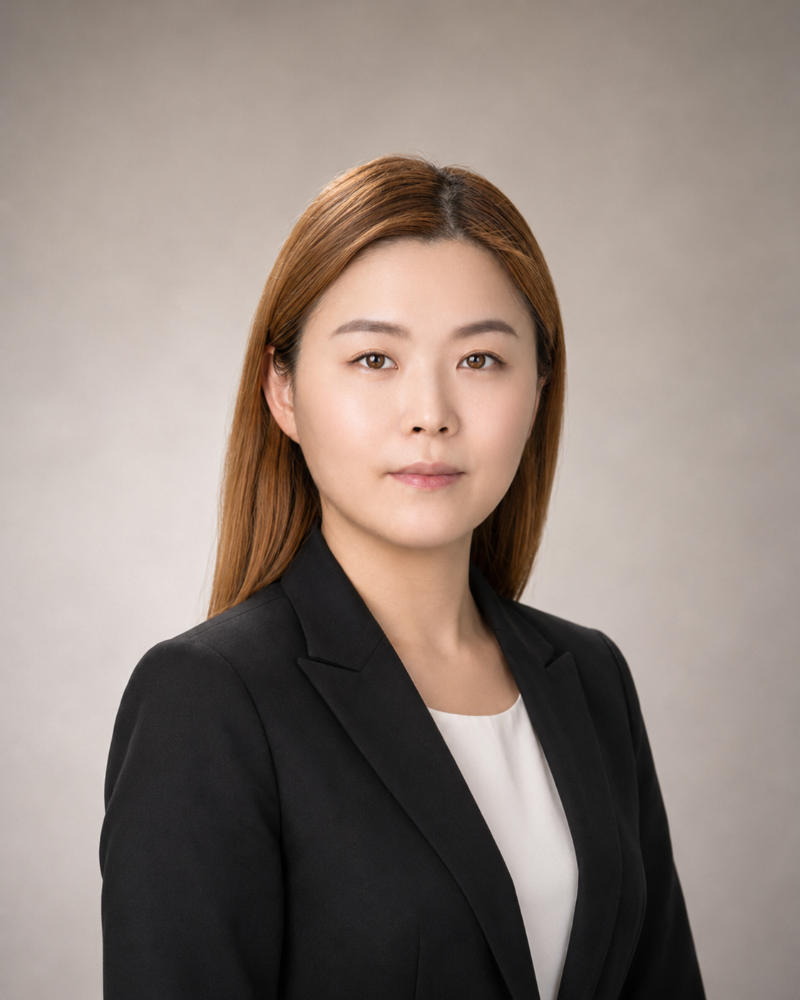

박신영
Drug Discovery & Translational Research Scientist
비임상 효능평가 · 후보물질 개발 · Translational Research
실험 결과를 다음 개발 의사결정으로 연결하는 연구자
약 9년간 세포 기반 효능평가부터 비임상 데이터 통합, 후보물질 우선순위 평가 및 개발 방향 판단 지원까지 수행
- Protein Therapeutics
- Peptide Therapeutics
- mRNA Therapeutics
- DDS
- 약 9년 R&D
- 대표 프로젝트 5개
- 논문 3건

9YTranslationalResearch
항암 · 희귀유전질환 · 신경퇴행성질환Protein · Peptide · mRNA · DDS
한눈에 보는 커리어
세포 기반 연구에서 비임상 개발까지 확장해 온 약 9년의 신약개발 R&D 경험
약 9년 신약개발 R&D
실험 기반의 신약 후보 평가 경험
세포 기반 효능평가와 질환모델 연구를 기반으로 비임상 개발 과정까지 경험 범위를 확장
Protein → Peptide · mRNA
다양한 치료 모달리티로 확장
재조합단백질 연구 경험을 기반으로 펩타이드와 mRNA·DDS 후보 평가까지 연구 범위를 확장
Wet Lab → Strategy & Collaboration
직접 실험에서 개발 판단 지원으로
직접 실험 중심 역할에서 비임상 전략, CRO·외부협업, 데이터 통합과 후속 개발 판단 지원으로 역할을 확장
Experiment→Integration→Decision Support
신약 후보물질 개발 경험
펩타이드, mRNA·DDS, 재조합단백질 치료제 연구에서 후보물질 평가부터 비임상 개발까지 수행한 주요 프로젝트
ONCOLOGY · PEPTIDE THERAPEUTICS
면역항암 펩타이드 후보물질 개발
My Role
펩타이드 후보물질의 in vitro 효능평가법 구축부터 Screening·최적화 및 후보 우선순위 검토까지 수행
Key Work
- in vitro 약효평가법 구축 및 조건 최적화
- 후보물질 Screening 및 Wet Lab 검증
- 외부 분석·AI 모델링 결과와 실험 데이터를 비교·분석
- 반복적인 후보 설계·평가 결과를 기반으로 후보 우선순위 검토
Outcome / Decision
실험 데이터와 외부 분석 결과를 통합해 후보물질을 비교·평가하고, 결합력이 향상된 후보물질 도출 및 후속 개발 방향 검토에 기여
RARE DISEASE · mRNA THERAPEUTICS
희귀질환 mRNA 치료제 개발
My Role
mRNA 구조·DDS 조합의 세포 내 발현 검증부터 비임상 효능평가 전략 수립 및 CRO 시험 운영까지 담당
Key Work
- mRNA 구조 및 DDS 조합 비교평가
- 세포 기반 발현 검증 및 지속성 비교
- 질환모델·Endpoint 선정 및 비임상 효능시험 전략 수립
- CRO 선정, 시험계획 검토 및 시험 운영
- Raw Data·결과보고서 검토와 연구 결과 통합
Outcome / Decision
mRNA·DDS 조합별 발현 및 비임상 데이터를 확보하고, 계획된 in vivo 효능시험을 완료하여 후속 개발 판단에 필요한 근거를 마련
RARE DISEASE · ONCOLOGY · NEURODEGENERATIVE DISEASE
재조합단백질 기반 신약개발
My Role
희귀질환·항암·퇴행성 뇌질환 후보물질의 in vitro/in vivo 효능·MoA 평가에서 프로젝트 운영과 글로벌 공동연구 대응까지 역할을 확장
Key Work
- 재조합단백질 후보물질의 in vitro/in vivo 효능 및 MoA 평가
- 세포 기반 Assay와 질환 동물모델 구축·평가
- 효능·조직분포·기능회복 데이터 분석 및 후보물질 최적화
- 프로젝트 팀 운영 및 실험계획·Raw Data·결과 검토
- 글로벌 제약사·CRO·CMO와 공동연구 및 기술검토 대응
Outcome / Decision
효능·MoA·비임상 데이터를 통합해 후보물질 선정과 후속 개발 판단 근거를 마련하고, 공동연구 Data Package 및 AACR Poster 등 연구 산출물로 연결
직접 실험에서 비임상 개발 의사결정 지원으로의 확장
직접 실험과 질환모델 평가에서 출발해 데이터 통합, 외부 연구 운영 및 후속 개발 판단 지원까지 역할 범위를 확장
Experimental Foundation
iCP-Parkin
Assay·질환모델 구축과 직접 실험을 통해 후보물질 평가 기반을 확립
Integrated Evaluation
iCP-SOCS3
세포·동물 효능 데이터를 통합하고 연구팀 단위 평가전략 운영 경험을 확장
External Collaboration
재조합단백질 기반 신약개발
직접 실험과 함께 글로벌 공동연구·CRO·CMO 데이터 검토와 통합 역할을 수행
Development Decision Support
펩타이드 · mRNA 치료제 개발
후보 Screening·비임상 운영 결과를 바탕으로 후보 우선순위와 후속 개발 판단을 지원
데이터를 해석해 다음 개발 판단으로 연결
효능·MoA·발현·비임상 데이터를 통합적으로 해석하고 후보물질 우선순위와 후속 개발 방향을 검토
Evidence
효능 · MoA · 발현 · 전달성 · 조직/비임상 데이터
Interpretation
데이터 통합 · 결과 간 일관성 확인 · 데이터 한계 및 리스크 해석
Decision
후보물질 우선순위 · 후속 시험 방향 · 개발 리스크 검토 · 후속 개발 판단 근거
Evidence의 양보다 데이터 간 관계와 한계를 해석해 후속 개발 판단에 사용할 수 있는 근거로 전환
신약 후보 평가에서 개발 판단까지
후보·기술 평가부터 Assay 설계, 효능·비임상 데이터 검토, 후보 우선순위 및 후속 개발 판단까지의 연구 경험
DEFINE
Candidate / Technology
후보·기술의 연구 맥락과 평가 질문 정의
Assay Strategy
연구 질문에 맞는 평가체계와 조건 설계
GENERATE & INTEGRATE EVIDENCE
Cell-based Efficacy
세포 효능·기전·발현 데이터 확보와 해석
Protein · Tissue · in vivo
단백질·조직·동물 수준의 비임상 근거 평가
External Data Review
CRO·CMO·외부 분석 결과의 과학적 검토
TRANSLATE TO DECISION
Candidate Prioritization
후보 비교·우선순위와 보완 필요사항 검토
Development Decision Support
후속 시험·개발 방향 판단을 위한 근거 정리
Assay·질환모델 구축과 직접 실험 기반
후보물질의 세포 기반 효능평가와 질환모델 구축을 중심으로 수행한 연구 경험
NEURODEGENERATIVE DISEASE
iCP-Parkin
Auto-ubiquitination Assay와 6-OHDA 모델 구축을 통한 후보물질 직접 평가 기반 확보
- 뇌조직 TH 분석 및 단백질 투과능 평가
- Apoptosis 및 Rotarod 평가
- 후보 구조 최적화 지원
ONCOLOGY · PROTEIN THERAPEUTICS
iCP-SOCS3
세포기능·MoA·Cytokine·동물모델 데이터 통합과 연구팀 단위 평가전략 운영
- Migration · Proliferation · Cytokine 분석
- Xenograft 구축 지원 및 Orthotopic 데이터 분석
- 생산수율과 효능을 함께 검토한 개발 보류 판단 지원
신약개발 연구 핵심 역량
실험 기반 후보 평가부터 비임상 연구 운영, 데이터 통합 및 개발 판단 지원까지의 연구 역량
Experimental Evidence
- Cell-based Assay
- Molecular Biology
- Protein Analysis
- Imaging & Flow Cytometry
Nonclinical & Translational
- Disease Models
- In Vivo Efficacy
- Tissue Analysis
- Endpoint Strategy
External Research Operations
- CRO · CMO / CDMO Review
- Raw Data · Report Review
- Global Collaboration
- Data Integration
Decision & Leadership
- Candidate Prioritization
- Development Risk Assessment
- Research Direction Support
- Team & Project Leadership
Research Experience, Expanded with Data & AI
신약개발 연구에서 쌓아온 데이터 해석 경험을 바탕으로,
AI와 데이터 분석 방법을 활용해 분석·검증 역량을 확장하고 있습니다
AI-Assisted Data Analysis
일반 데이터에서 분석과 검증 방법을 익히고, DPP-IV와 METABRIC을 통해 바이오 데이터 분석으로 적용 범위를 확장하고 있습니다
AI-Assisted Data Analysis
일반 데이터에서 분석과 검증 방법을 익히고, DPP-IV와 METABRIC을 통해 바이오 데이터 분석으로 적용 범위를 확장하고 있습니다
분석 방법의 확장과 바이오 데이터 적용
일반 데이터에서 분석과 검증 방법을 익히고, 바이오 데이터 분석으로 적용 범위를 확장했습니다
Washington Bike Sharing
모델 실행 결과를 검토하며 target leakage를 확인하고 재분석
London Bike Sharing
Temporal split과 Train-Test gap을 통해 미래 예측의 일반화 가능성 검토
DPP-IV · METABRIC
Machine Learning과 통계 분석을 바이오 연구 질문과 결과 해석에 적용
Current Focus
Foundation & Depth
Statistics · ML Evaluation · Python Understanding · Reproducibility
연구에서 사용해 온 검증 방식을 데이터 분석으로 확장
신약개발 연구에서 질문을 정의하고 결과를 검증·해석해 온 방식처럼,
데이터 분석에서도 목적과 데이터 품질을 먼저 확인합니다.
AI는 분석 방법 검토와 구현·반복 실행에 활용하고,
결과의 타당성을 확인해 필요하면 분석을 다시 조정합니다
Question
분석 목적과 질문 정의
Data Check
구조·품질·Leakage 확인
Analysis Design
목적에 맞는 방법 검토·선택
AI-assisted Implementation
구현과 반복 실행 가속
Validation
성능·가정·일반화 검토
Interpretation
도메인 맥락에서 결과·한계 해석
ValidationRefine & Re-analyzeAnalysis Design
결과를 그대로 받아들이지 않고 검증·재분석·해석하는 과정을 중요하게 봅니다
바이오 연구 질문에 적용한 분석 사례
DPP-IV에서는 ML 결과의 생물학적 의미를, METABRIC에서는 생존분석 결과의 통계적 타당성과 모델 가정을 중점적으로 검토했습니다
01 · Biological Interpretation
View Project →
DPP-IV Inhibitory Peptide Classification
Drug Discovery × Machine Learning × Biological Interpretation
Peptide sequence와 DPP-IV inhibitory activity의 관계를 분석하고, 모델이 포착한 특징을 기존 연구 및 biological knowledge와 비교했습니다
Data QC→Feature Engineering→Model Comparison→Biological Interpretation
Data QualityConflicting label · Train-Test overlap 확인
AnalysisClassification model 비교 · 주요 sequence signal 검토
Interpretation기존 문헌 및 biological knowledge와 비교
예측 성능에서 끝내지 않고 모델이 포착한 신호의 생물학적 의미를 검토
02 · Analytical Validation
View Project →
METABRIC TP53 Mutation & Cancer-Specific Survival Analysis
Biomedical Statistics × Survival Analysis × Model Validation
TP53 mutation과 cancer-specific survival의 관계를 분석하고, 유의한 결과를 확인한 뒤에도 proportional hazards assumption을 검증해 분석 결과의 안정성을 확인했습니다
Outcome Definition→Kaplan-Meier→Cox Model→PH Check→Stratified Cox
Analysis DesignCancer-specific survival outcome · 분석 cohort 정의
ValidationProportional hazards assumption 추가 확인
Re-analysis가정 위반 확인 후 stratified model 재적합
통계적 유의성에서 멈추지 않고 모델 가정과 분석 조건을 다시 검토
HR 1.5095% CI 1.22–1.84 · p = 0.00011
R&D 의사결정에 AI와 데이터 분석 역량을 활용하는 신약개발 연구자
외부 연구 결과를 내부 판단 근거로 전환
글로벌 제약사·대학·CRO·CMO와 협업하며 시험계획과 연구 데이터를 검토하고 내부 연구전략에 반영
External Collaboration
공동연구·기술검토·CRO·CMO 결과를 연구 질문과 연결해 검토하고 후속 평가에 반영
Joint ResearchTakeda · 일동제약
Technical ReviewSanofi · Celgene
UniversityUniversity of Wisconsin–Madison
CROCharles River Laboratories
CMO / CDMOWuXi Biologics
Research Leadership
팀과 외부기관에서 생성된 연구 결과를 통합 검토하고 후속 연구 방향과 개발 판단으로 연결하는 프로젝트 운영 경험
- 실험계획·Raw Data·결과 검토
- 연구 일정과 후속 시험 방향 검토
- 팀 업무 배분 및 결과 통합
- 후보 우선순위와 경영진 보고 지원
연구 결과의 학술·협업·의사결정 자료 전환
실험과 데이터 분석 결과를 논문, 학회, 공동 연구 Data Package, 국가과제 결과보고서와 기술검토 자료로 구조화
Targeting PGC-1α to Overcome the Harmful Effects of Glucocorticoids in Porcine Neonatal Pancreas Cell Clusters
DOI: 10.1097/01.TP.0000438627.68225.25
View PublicationPattern of Stress-Induced Hyperglycemia according to Type of Diabetes: A Predator Stress Model
DOI: 10.4093/dmj.2013.37.6.475
View PublicationSuppression of ROS Production by Exendin-4 in PSC Attenuates the High Glucose-Induced Islet Fibrosis
DOI: 10.1371/journal.pone.0163187
View PublicationContact
연구 결과를 개발 판단으로 연결하는 역할에 기여할 수 있음
비임상 효능평가, 후보물질 개발, Translational Research 및 외부 연구기관 협업 경험을 바탕으로 새로운 연구개발 환경에서 기여 가능